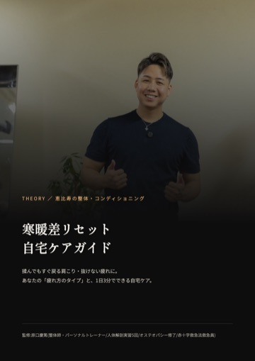
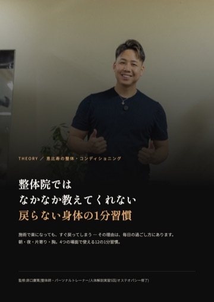
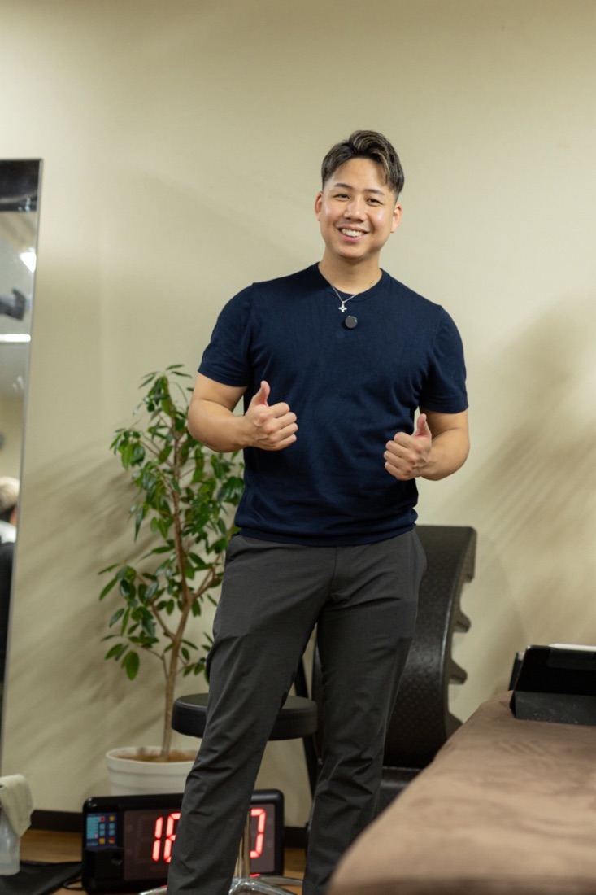

朝晩の寒暖差で、からだが重い方へ
揉んでも、
すぐ戻る肩こり。
「あるある」を4つだけチェック(1分)。1つでもあてはまれば、セルフケアPDF2冊と初回30%OFFをLINEでお届けします。
無料プレゼント


- 寒暖差リセット 自宅ケアガイド(9ページ)
- 整体院ではなかなか教えてくれない 戻らない身体の1分習慣(12ページ)
所要1分・登録は無料。いつでもブロックできます。
LINE登録後にできること
特典を受け取ったあとも、LINEひとつで予約から相談までできます。
📅24時間
ネット予約
ネット予約
💴料金
メニュー
メニュー
⭐お客様の声
Google 5.0
Google 5.0
📩7日間の
ケア配信
ケア配信
🎁初回
30%OFF
30%OFF
👤原口の
プロフィール
プロフィール

THEORYについて
評価してから、整える
東京・恵比寿周辺(完全予約制)。身体の状態を評価してから、整体・関節調整・ストレッチ・運動を組み合わせて内容を決めます。
初回 TOTAL BODY CHECK
75〜90分/10,000円(税込)。LINE登録者限定で初回30%OFF(7,000円)。LINE登録から14日以内のご予約が対象です。初回の方には「評価レポート(写真つき)」もお渡しします。
お客様の声(Google口コミ 5.0・38件)
「今の自分の身体がどういう状態で、どこをどうしていけばよくなるか説明していただいて、分かりやすくて、とっても良かったです」
「今までとは違う見立てで、3年前に骨折した足首にアプローチしてもらうと、その場であぐらがかけました」
お客様の声をもっと見る →
※Googleの口コミより一部抜粋・要約。個人の感想です。
原口 慶篤
パーソナルトレーナー兼整体師。トレーナー歴12年。
NASM-PES/NSCA-CPT/人体解剖実習5回修了/オステオパシー修了/赤十字救急法救急員
このチェックはセルフチェックの目安で、診断ではありません。当セッションは医療行為ではなく、診断・治療を目的としたものではありません。痛みやしびれが強い場合は、先に医療機関へご相談ください。